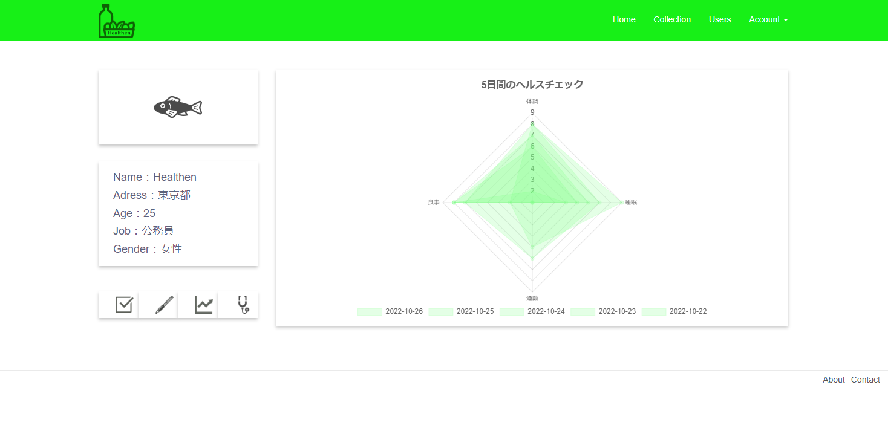
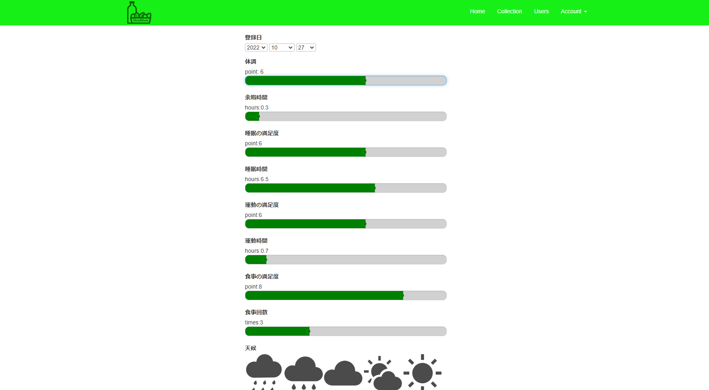
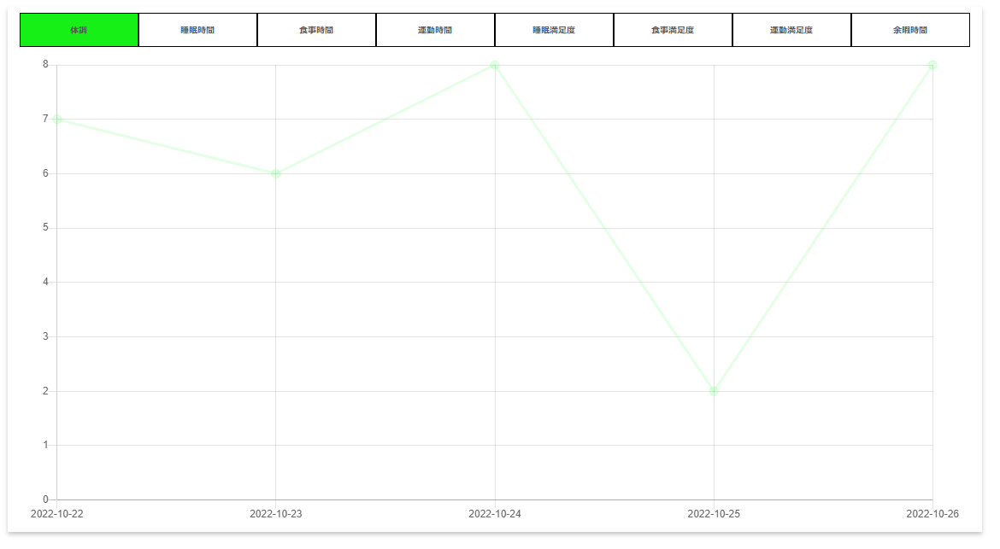
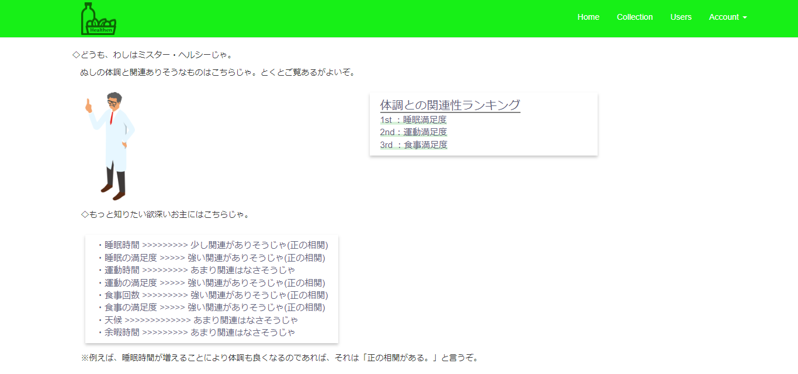

Healthen
ヘルスケアデータを記録し、可視化・分析・比較することで、より健康的な生活へのサポートを行う。
Link to App使用技術
- Ruby on Rails
- PostgreSQL
- HTML/CSS/javascript(chart.js)
- heroku
工夫した点
- グラフを使い視覚的に分かりやすいUIを心掛けた。
- 既存のヘルスケアアプリは(iphoneのヘルスケア等)客観データ(歩数等)を主としているため、主観的なデータを主とし、異なる価値提供を図った。
- どのような因子が体調の良さと関連しているのかを計算するロジックを作成し、体調改善に繋がるアドバイザリ機能を提供。
苦労した点/反省点
- フロントの勉強不足のため魅力的なデザインを提供できなかった。
- 設計にほとんど時間をかけていなかったため、途中でDBを入れ替える事態に。。。
画面の一例
My page
Register page
Graph page
Correlation page
Piglet (Piggy Wallet)
簡単な収支管理アプリ
Link to App仕様技術
- React
- HTML/CSS
- firebase(firestore)
工夫した点
- 機能的にシンプルなアプリなため、UIにこだわりを持った。
- Reactらしいモダンで非同期的なSPAを実装できた。
苦労した点/反省点
- firestore(NoSQL DB)の制約により元々構想していたアプリの開発の中断を余儀なくされた。
- 今後はfirebaseではなく、サーバーサイド側は別に実装することで、より高度なアプリ構築を目指したい。